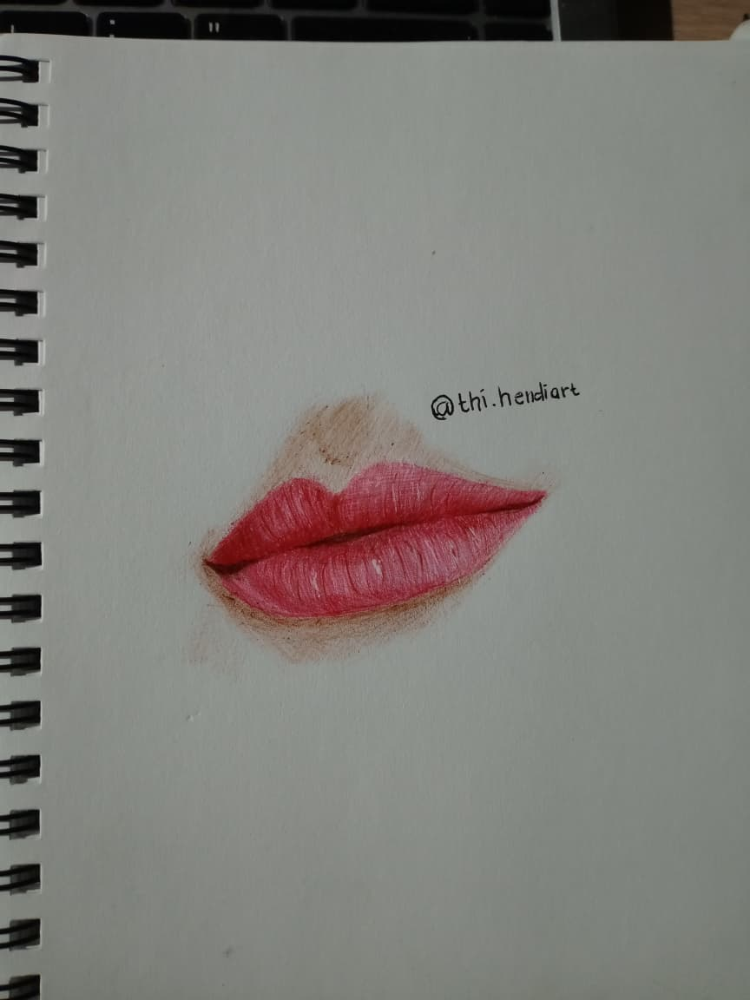

Sebuah studi realisme bibir perempuan yang digambar sepenuhnya menggunakan bolpoin 10-warna.
Arsitektur ruang kerja 3D interaktif yang sedang Anda jelajahi saat ini. Dibangun dengan Three.js, pencahayaan multi-mood dinamis, tekstur kanvas prosedural, proyeksi hotspot 3D-ke-2D, serta transisi kamera sinematik GSAP.
Perancangan sistem automasi tugas untuk menghubungkan berbagai layanan berbasis Webhook dan REST API. Memproses transformasi data secara otomatis dan sinkronisasi database real-time tanpa intervensi manual.
Eksperimen seni algoritma menggunakan HTML5 Canvas 2D yang menerjemahkan fungsi gelombang trigonometri menjadi pita sutra yang merespons sentuhan kursor mouse secara halus pada 60 FPS.
Saya adalah seorang mahasiswa Manajemen Informatika dan lulusan SMK Teknik Komputer & Jaringan (TKJ). Berangkat dari fondasi jaringan komputer dan logika pemrograman, saya menemukan panggilan kreatif dalam menyatukan teknologi web dengan seni lukis bolpoin realistis.
Bagi saya, merancang arsitektur kode dan mengarsir ribuan garis bolpoin di atas kertas memiliki filosofi yang sama: keduanya menuntut ketelitian, kesabaran tanpa jalan pintas, dan kepekaan terhadap keindahan detail.
Unduh ringkasan profil akademis, keahlian teknis, dan portofolio saya.
2024 — Sekarang: Mahasiswa Manajemen Informatika (Rekayasa Web & Sistem Informasi).
2021 — 2024: SMK Teknik Komputer & Jaringan (Infrastruktur Jaringan & Hardware).
Membangun pengalaman web yang responsif, interaktif, dan berestetika tinggi.
Mengabadikan ekspresi dan kedalaman emosi melalui teknik arsiran bolpoin.
Pintu studio saya selalu terbuka untuk diskusi pengembangan website kreatif, kolaborasi teknologi, maupun pemesanan karya lukis bolpoin khusus.
Pilih halaman di bawah ini jika Anda lebih menyukai navigasi halaman web tradisional:
Lihat seluruh 6 lukisan bolpoin realistis dan proyek rekayasa perangkat lunak dalam tampilan grid lengkap.
Buka Galeri KaryaPerjalanan saya dari SMK Teknik Komputer & Jaringan, Manajemen Informatika, hingga seni lukis pena.
Baca Tentang SayaHubungi langsung melalui WhatsApp, Instagram Art Gallery, TikTok, atau formulir pesan.
Hubungi SekarangMembuka aplikasi surel Anda...